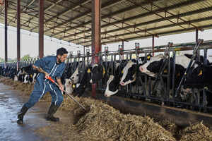

ⲃⲁⲣⲱϩ S, ⲃⲁⲣⲟϩ B nn m, fodderer or sim: Saq 13, 227, 350 S among monastic officials, K 115 B علاف.

ⲃⲁⲣⲱϩ S, ⲃⲁⲣⲟϩ B nn m, fodderer or sim: Saq 13, 227, 350 S among monastic officials, K 115 B علاف.
ⲃⲁⲣⲁϩ F nn: BM 587, 706, uncertain to which of above words these belong.